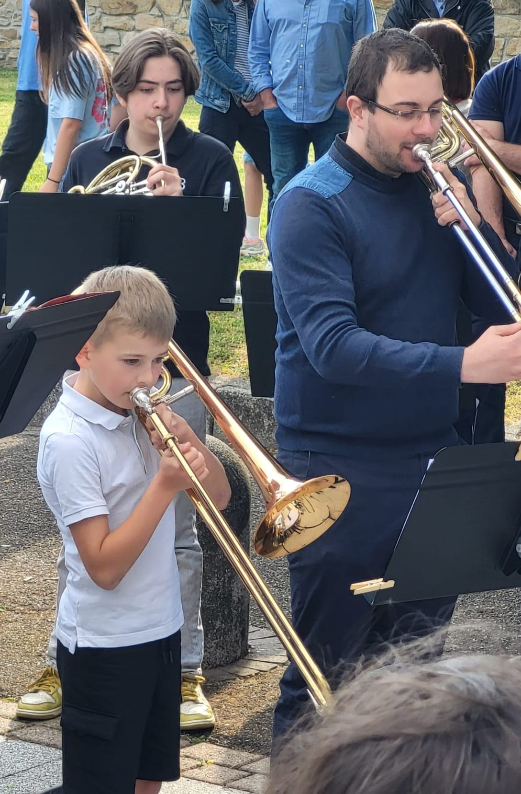

OAE
Orchestre à l'École
A l'école primaire
En 2012, avec le soutien de la mairie de Beinheim et en partenariat avec l’association « Orchestres à l’école », l’OHB a créé 4 classes d’orchestre à l’école (OAE) au bénéfice du RPI Beinheim/Kesseldorf. Ainsi, du CE1 au CM2, les élèves ont deux heures d’enseignement musical et de pratique instrumentale hebdomadaires. Les instruments leurs sont prêtés gratuitement durant ces quatre années. A travers cette pratique, les enfants développent le goût de l’effort, la responsabilité individuelle dans la réussite collective et le travail en groupe. Les élèves des OAE se produisent chaque année lors d’un concert gratuit en compagnie des musiciens de l’OHB.
Au collège de Seltz
Fort de l’expérience acquise avec les OAE de l’école primaire et soucieux de développer une offre cohérente, l’OHB a créé en décembre 2025 un orchestre à l’école au collège de Seltz encadré par Sophie De Almeida. Composé d’une vingtaine d’élèves issus de différentes structures musicales, ces derniers bénéficient d’une heure hebdomadaire de pratique collective sur des instruments financés par l’association orchestre à l’école et le TER et dont la gestion revient à l’OHB.

Cérémonie du 08 mai
Le 8 mai 2026, pour la première fois de son histoire, l'OHB a participé à la cérémonie commémorative de Beinheim. Une occasion unique pour les musiciens de l'Orchestre Junior de vivre leur toute première animation aux côtés des musiciens de l'orchestre, devant un public nombreux et ému. Un moment fort entre transmission et fierté partagée — 3 générations issues des OAE étaient réunies pour cette cérémonie.

OJ
Orchestre des Jeunes
L'Orchestre des Jeunes est la formation intermédiaire entre l'OAE et l'orchestre principal. Il accueille les jeunes musiciens qui maîtrisent déjà les bases et souhaitent progresser dans un répertoire plus ambitieux.
Tremplin vers l'orchestre adulte, l'OJ participe à certains concerts et événements de l'association, permettant aux jeunes de vivre l'expérience de la scène.